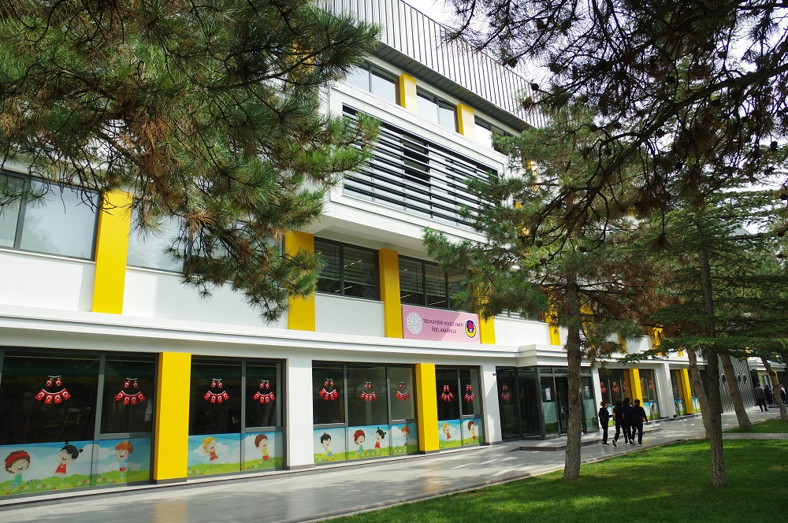

TED KAYSERİ KINDERGARDEN

In TED Schools, our educational philosophy, which aims to prepare our students for their academic development as well as to raise them as physically, mentally and spiritually balanced and healthy individuals, is to prepare them for life as social, artistic, problem-solving, self-confident, creative and productive individuals. In this context, art, sports and social activities; themes such as environmental and health awareness are applied by associating them with the curriculum. By supporting all kinds of activities that will reveal and develop students' interests and talents, our school provides the opportunity to develop our students in every field and exhibit their products. There are many educational areas offered to our students in our school.